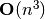

Prime permutations¶
Problem 49
The arithmetic sequence, 1487, 4817, 8147, in which each of the terms increases by 3330, is unusual in two ways: (i) each of the three terms are prime, and, (ii) each of the 4-digit numbers are permutations of one another.
There are no arithmetic sequences made up of three 1-, 2-, or 3-digit primes, exhibiting this property, but there is one other 4-digit increasing sequence.
What 12-digit number do you form by concatenating the three terms in this sequence?
Solution
We’ll make use of a number of functions:
euler07.primeGen(), euler52.isPermutation(),
euler04.digits(), and euler35.number().
from euler07 import primeGen
from euler52 import isPermutation
from euler04 import digits
from euler35 import number
We can filter the results of euler07.primeGen() to
yield primes, p, such that 1000 ≤ p < 10000. These are the
4-digit primes.
def makePrimes(start=1000, stop=10000):
"""Make primes in the given range.
>>> from euler49 import makePrimes
>>> p4 = list(makePrimes())
>>> len(p4)
1061
>>> p4 # doctest: +ELLIPSIS
[1009, ..., 9973]
"""
pg= primeGen()
for p in pg:
if p >= stop:
break
if start <= p:
yield p
For a set of primes, yield all of the larger primes so we can compute the various gaps available between this prime and all others.
def makeGaps( primes ):
"""Make all gaps between all primes.
>>> from euler49 import makePrimes, makeGaps
>>> p4 = list(makePrimes())
>>> gaps= set( makeGaps(p4) )
>>> len(gaps)
3977
>>> min(gaps)
2
>>> max(gaps)
7954
"""
p_min, p_max = min(primes), max(primes)
for i, a in enumerate( primes ):
for j in range( i+1, len(primes) ):
gap= primes[j]-a
if gap+p_min+p_min > p_max: continue
yield gap
Given primes and allowed gaps between primes, compute triples of prime, prime+gap and prime+gap+gap where all three values are prime.
Note that this is  because we process the primes when creating the gaps and again here. If the gaps yielded prime,gap as a pair, we could eliminate the outer loop.
def threeStep(primes, gaps):
"""
from euler49 import makePrimes, makeGaps, threeStep
>>> p4 = list(makePrimes())
>>> gaps= set( makeGaps(p4) )
>>> step3= list( threeStep( p4, gaps ) )
>>> len(step3)
42994
"""
pSet= set(primes)
for p in primes:
for g in gaps:
if p+g in pSet and p+g+g in pSet:
yield p, p+g, p+g+g
The answer involves 4-digit primes and gaps. Which set of numbers – with a consistent gap – are permutations of each other?
def primeGapPerm():
"""There are just two answers.
>>> from euler49 import primeGapPerm
>>> list(primeGapPerm())
[(1487, 4817, 8147), (2969, 6299, 9629)]
"""
p4 = list(makePrimes())
gaps= set( makeGaps(p4) )
step3= list( threeStep( p4, gaps ) )
for a, b, c in step3:
da= digits(a)
db= digits(b)
dc= digits(c)
if isPermutation(da,db) and isPermutation(db,dc):
yield a,b,c
Test the module components.
def test():
import doctest
doctest.testmod(verbose=0)
Create the answer.
def answer():
for a,b,c in primeGapPerm():
if a == 1487 and b == 4817 and c == 8147:
continue
return number( digits(a) + digits(b) + digits(c) )
Confirm the answer.
def confirm( ans ):
assert ans == 296962999629, "{0!r} Incorrect".format(ans)
Create some output.
if __name__ == "__main__":
test()
ans= answer()
confirm( ans )
print( "Concatenating the three terms in this sequence of 4-digit primes that are permutations:", ans )